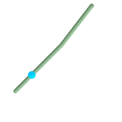

名前
ST_LineInterpolatePoint — ラインに沿って、割合で示された位置の補間ポイントを返します。
概要
geometry ST_LineInterpolatePoint(geometry a_linestring, float8 a_fraction);
説明
ラインに沿って、割合で示された位置の補間ポイントを返します。一つ目の引数はLINESTRINGです。二つ目の引数は0から1の間の浮動小数点数で、ライン長に対するポイントの位置の割合を表現します。Z値とM値が存在する場合には補間計算を行います。
ポイントに最も近いライン位置の計算についてはST_LineLocatePointを参照して下さい。
![[注記]](images/note.png) | |
この関数は2次元のポイントとして計算して、Z値とM値は補間値を計算します。ST_3DLineInterpolatePointは3次元のポイントとして計算して、M値のみ補間値を計算します。 |
| |
1.1.1から、この関数はM軸やZ軸の内挿点も (存在するなら)計算するようになりました。それより前の版では0.0となります。 |
Availability: 0.8.2 Z軸とM軸のサポートが1.1.1で追加されました。
Changed: 2.1.0 2.0.xまでではST_Line_Interpolate_Pointと呼んでいました。
 This function supports 3d and will not drop the z-index.
This function supports 3d and will not drop the z-index.
例

ラインストリングの20% (0.20)位置の補完ポイント
-- ラインに沿った20%位置
SELECT ST_AsEWKT(
ST_LineInterpolatePoint(
'LINESTRING(25 50, 100 125, 150 190)',
0.2 ));
st_asewkt
----------------
POINT(51.5974135047432 76.5974135047432)
3次元ラインの中間点
SELECT ST_AsEWKT(
ST_LineInterpolatePoint('
LINESTRING(1 2 3, 4 5 6, 6 7 8)',
0.5 ));
st_asewkt
--------------------
POINT(3.5 4.5 5.5)
ライン上のポイントに最も近いポイント
SELECT ST_AsText(
ST_LineInterpolatePoint( line.geom,
ST_LineLocatePoint( line.geom, 'POINT(4 3)')))
FROM (SELECT ST_GeomFromText('LINESTRING(1 2, 4 5, 6 7)') As geom) AS line;
st_astext
------------
POINT(3 4)